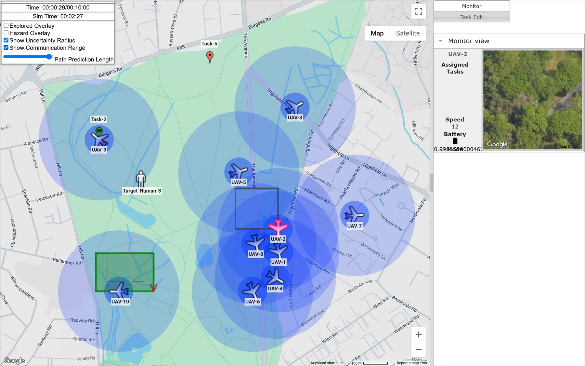
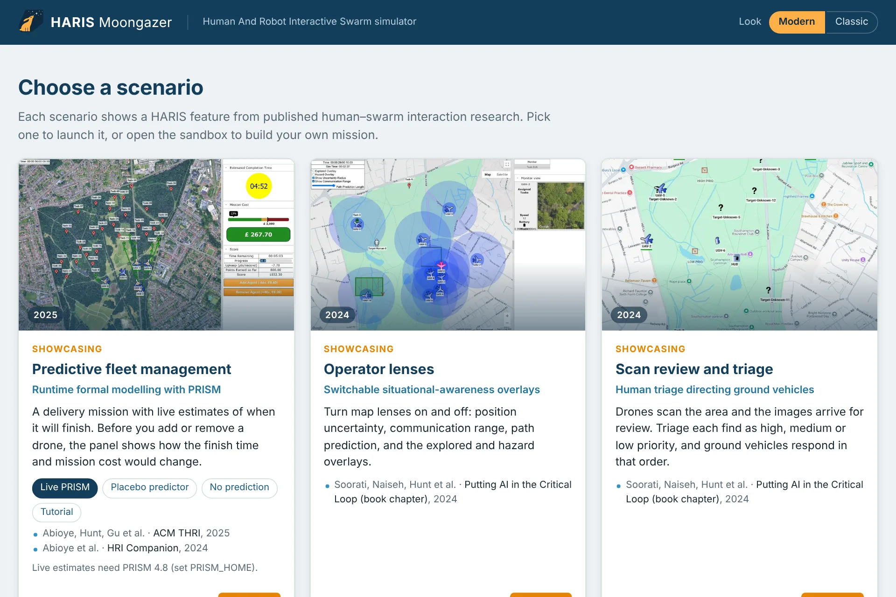
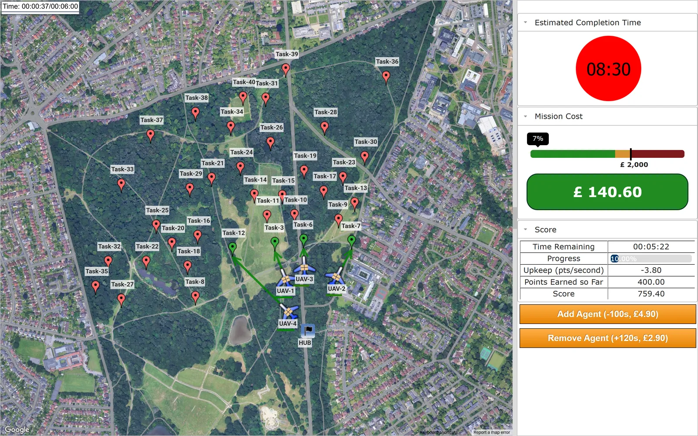
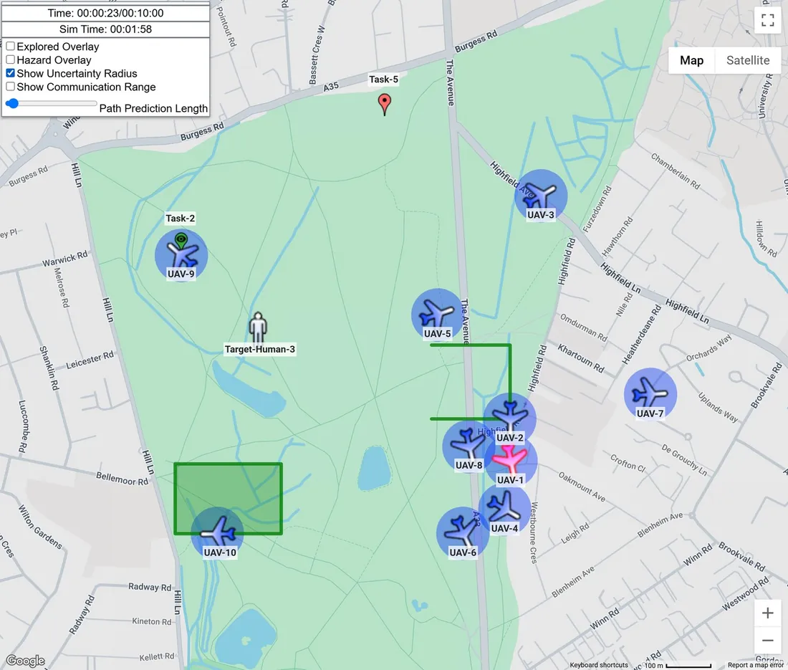
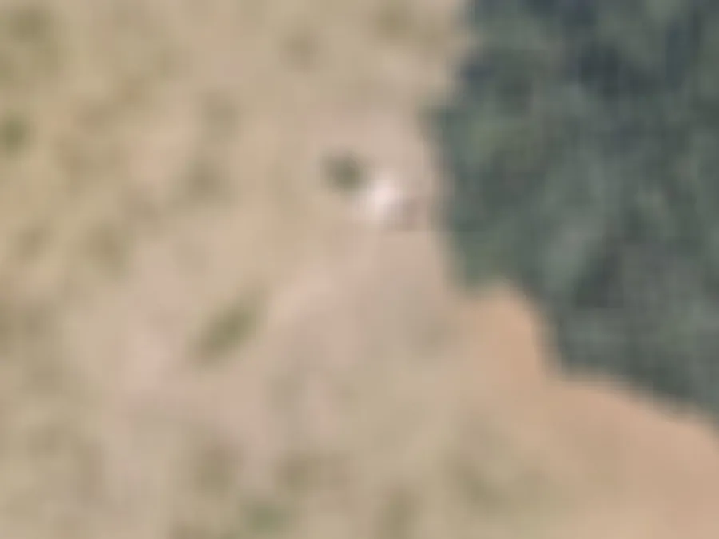
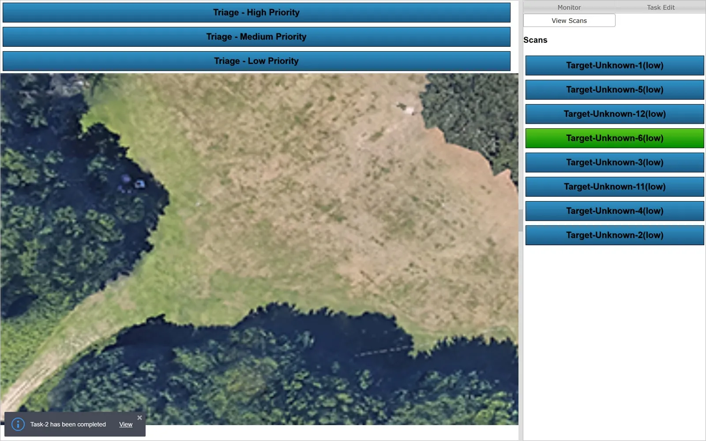
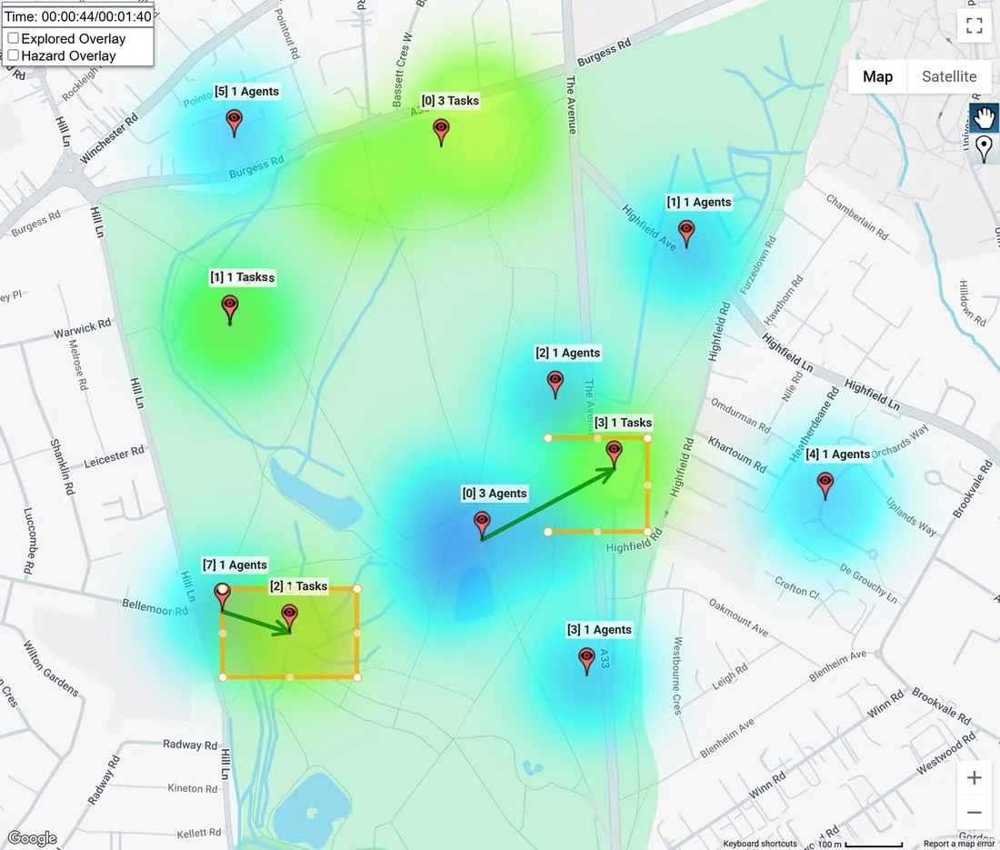
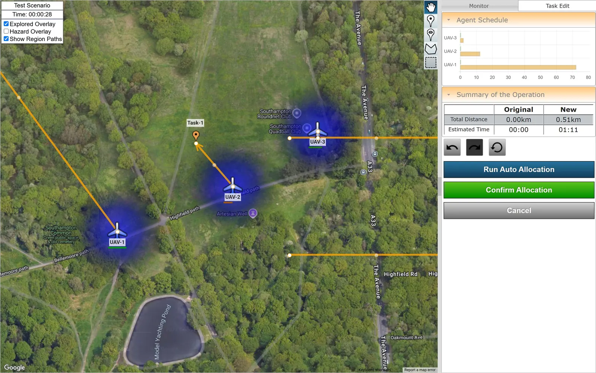
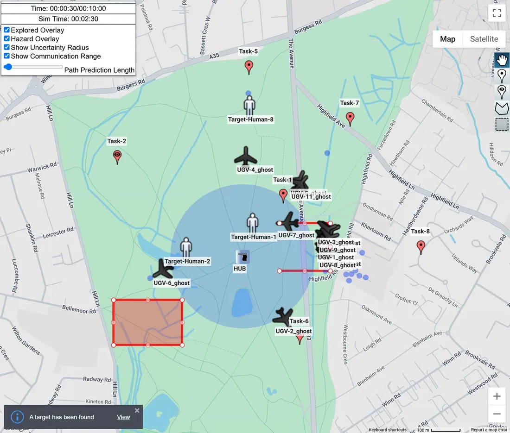

<title>HARIS Moongazer</title>
<meta name="claude:viewport-fit-sides" content="cover">
<link rel="preconnect" href="https://fonts.googleapis.com">
<link rel="preconnect" href="https://fonts.gstatic.com" crossorigin>
<link rel="stylesheet" href="https://fonts.googleapis.com/css2?family=Archivo:wdth,wght@62..125,400..800&family=IBM+Plex+Mono:wght@400;500&family=IBM+Plex+Sans:wght@400;500;600&display=swap">
<style>
/* Layout: ops-console showcase. Live swarm hero, then one band per interaction pattern with a working control beside each screenshot. */
:root{
  --bg:#f3f5f7; --surface:#ffffff; --sunk:#e8ecf0; --ink:#0f1a24; --muted:#56636f; --line:#d3dae1;
  --accent:#1c5a85; --accent-soft:rgba(28,90,133,.12); --signal:#e78404; --navy:#133d5b; --ok:#1f8a4c; --bad:#c23b2e;
  --display:"Archivo","Arial Narrow",system-ui,sans-serif;
  --body:"IBM Plex Sans",system-ui,-apple-system,"Segoe UI",sans-serif;
  --mono:"IBM Plex Mono",ui-monospace,"SFMono-Regular",Menlo,monospace;
  --maxw:1180px; --r:10px;
}
@media (prefers-color-scheme: dark){:root:not([data-theme="light"]){
  --bg:#0c131a; --surface:#131c25; --sunk:#0f171f; --ink:#e4ebf1; --muted:#97a5b2; --line:#253341;
  --accent:#6fb3e0; --accent-soft:rgba(111,179,224,.16); --signal:#ffaf46; --navy:#0d2a40; --ok:#4cc27f; --bad:#f07a6c; color-scheme:dark}}
:root[data-theme="dark"]{
  --bg:#0c131a; --surface:#131c25; --sunk:#0f171f; --ink:#e4ebf1; --muted:#97a5b2; --line:#253341;
  --accent:#6fb3e0; --accent-soft:rgba(111,179,224,.16); --signal:#ffaf46; --navy:#0d2a40; --ok:#4cc27f; --bad:#f07a6c; color-scheme:dark}

*{box-sizing:border-box}
body{background:var(--bg);color:var(--ink);font:16px/1.6 var(--body);-webkit-font-smoothing:antialiased}
a{color:var(--accent)}
:focus-visible{outline:2px solid var(--accent);outline-offset:3px;border-radius:4px}
.wrap{max-width:var(--maxw);margin:0 auto;padding-left:max(16px,env(safe-area-inset-left,0px));padding-right:max(16px,env(safe-area-inset-right,0px))}
h1,h2,h3{font-family:var(--display);text-wrap:balance;margin:0}
p{margin:0}
.mono{font-family:var(--mono)}
.eyebrow{font:500 12px/1.2 var(--mono);letter-spacing:.08em;text-transform:uppercase;color:var(--muted)}

/* launch page shot */
.launchshot{margin:28px 0 0}
.launchshot img{width:100%;height:auto;display:block;border:1px solid var(--line);border-radius:var(--r);box-shadow:0 12px 32px rgba(13,42,64,.12)}
.launchshot figcaption{margin-top:10px;color:var(--muted);font-size:14px}

/* header */
body::before{content:"";position:fixed;inset:0 0 auto;height:env(safe-area-inset-top,0px);z-index:10;background:var(--bg)}
header.top{position:sticky;top:env(safe-area-inset-top,0px);z-index:9;background:color-mix(in srgb,var(--bg) 88%,transparent);backdrop-filter:blur(8px);border-bottom:1px solid var(--line)}
header.top .wrap{display:flex;align-items:center;gap:24px;padding-block:12px}
.brand .mark{width:26px;height:26px;align-self:center}
.brand{display:flex;align-items:baseline;gap:8px;text-decoration:none;color:var(--ink)}
.brand b{font:800 22px/1 var(--display);font-stretch:125%;letter-spacing:.02em}
.brand span{font:500 11px/1 var(--mono);color:var(--accent);letter-spacing:.12em;text-transform:uppercase}
nav{display:flex;gap:18px;margin-left:auto;flex-wrap:wrap}
nav a{color:var(--muted);text-decoration:none;font-size:14px;font-weight:500}
nav a:hover{color:var(--ink)}
@media (max-width:640px){nav a:not(.gh){display:none}}

/* hero */
.hero .wrap{display:grid;grid-template-columns:minmax(0,1fr) minmax(0,1.05fr);gap:48px;align-items:center;padding-block:64px 40px}
.hero h1{font-weight:800;font-stretch:112%;font-size:clamp(34px,5vw,58px);line-height:1.02;letter-spacing:-.01em}
.hero h1 em{font-style:normal;color:var(--accent)}
.hero .lede{margin-top:20px;font-size:18px;color:var(--muted);max-width:52ch}
.acr{margin-top:22px;font:500 13px/1.5 var(--mono);color:var(--muted)}
.acr u{text-decoration:none;color:var(--ink);font-weight:600}
.cta{display:flex;gap:12px;flex-wrap:wrap;margin-top:28px}
.btn{display:inline-flex;align-items:center;gap:8px;padding:11px 18px;border-radius:8px;font-weight:600;font-size:15px;text-decoration:none;border:1px solid var(--line);color:var(--ink);background:var(--surface)}
.btn.primary{background:var(--accent);border-color:var(--accent);color:#fff}
:root[data-theme="dark"] .btn.primary{color:#0c131a}
@media (prefers-color-scheme: dark){:root:not([data-theme="light"]) .btn.primary{color:#0c131a}}
.console{position:relative;border:1px solid var(--line);border-radius:var(--r);background:var(--sunk);overflow:hidden;aspect-ratio:5/4;max-width:100%}
.console canvas{display:block;width:100%;height:100%;cursor:crosshair}
.hud{position:absolute;left:10px;top:10px;font:500 12px/1.4 var(--mono);background:var(--surface);border:1px solid var(--line);padding:4px 8px;border-radius:4px;font-variant-numeric:tabular-nums}
.hint{position:absolute;right:10px;bottom:10px;font:12px/1.3 var(--body);color:var(--muted);background:var(--surface);border:1px solid var(--line);padding:4px 8px;border-radius:4px}
@media (max-width:860px){.hero .wrap{grid-template-columns:1fr;gap:32px;padding-block:40px 24px}}

.facts{border-block:1px solid var(--line);background:var(--surface)}
.facts .wrap{display:grid;grid-template-columns:repeat(4,minmax(0,1fr));gap:16px;padding-block:20px}
.facts div{display:flex;flex-direction:column;gap:2px}
.facts strong{font:700 26px/1.1 var(--display);font-stretch:110%;font-variant-numeric:tabular-nums}
.facts span{font-size:13px;color:var(--muted)}
@media (max-width:640px){.facts .wrap{grid-template-columns:repeat(2,minmax(0,1fr))}}

.shot{padding-block:48px 8px}
figure{margin:0}
figure img{display:block;width:100%;height:auto;border-radius:var(--r);border:1px solid var(--line);background:var(--sunk)}
figcaption{margin-top:10px;font-size:13.5px;color:var(--muted);max-width:80ch}

/* sections */
section.block{padding-block:72px}
.sec-head{max-width:68ch;margin-bottom:40px}
.sec-head h2{font-weight:800;font-stretch:110%;font-size:clamp(28px,3.6vw,40px);line-height:1.08;margin-top:8px}
.sec-head p{margin-top:14px;color:var(--muted);font-size:17px}

.feature{display:grid;grid-template-columns:minmax(0,5fr) minmax(0,7fr);gap:44px;align-items:start;padding-block:44px;border-top:1px solid var(--line)}
.feature.flip{grid-template-columns:minmax(0,7fr) minmax(0,5fr)}
.feature.flip .text{order:2}
.feature .text{display:flex;flex-direction:column;gap:14px;min-width:0;position:sticky;top:90px}
.feature h3{font-weight:700;font-stretch:105%;font-size:26px;line-height:1.15}
.feature p{color:var(--ink)}
.feature .used{font-size:13.5px;color:var(--muted);border-top:1px dashed var(--line);padding-top:12px}
.feature .used b{color:var(--ink);font-weight:600}
.tag{display:inline-flex;gap:6px;align-items:center;font:500 11.5px/1 var(--mono);letter-spacing:.06em;text-transform:uppercase;color:var(--accent);background:var(--accent-soft);padding:5px 8px;border-radius:4px;width:max-content}
.tag.base{color:var(--muted);background:var(--sunk);border:1px solid var(--line)}
.media{min-width:0;display:flex;flex-direction:column;gap:12px}
.seg{display:flex;flex-wrap:wrap;gap:6px}
.seg button{font:500 13px/1 var(--body);padding:8px 12px;border-radius:6px;border:1px solid var(--line);background:var(--surface);color:var(--ink);cursor:pointer}
.seg button[aria-pressed="true"]{background:var(--ink);color:var(--bg);border-color:var(--ink)}
.seg button .dot{display:inline-block;width:8px;height:8px;border-radius:50%;margin-right:6px;vertical-align:1px}
.stage{position:relative}
.stage img{transition:opacity .25s}
.note{font-size:13.5px;color:var(--muted)}
ul.clean{margin:0;padding-left:18px;display:flex;flex-direction:column;gap:6px}
.range{display:flex;flex-direction:column;gap:6px}
.range input{width:100%;accent-color:var(--accent)}
.range .ticks{display:flex;justify-content:space-between;font:12px var(--mono);color:var(--muted)}
.duo{display:grid;grid-template-columns:1fr 1fr;gap:12px}
.duo img{aspect-ratio:900/675;object-fit:cover}
pre.code{margin:0;background:var(--sunk);border:1px solid var(--line);border-radius:var(--r);padding:16px 18px;overflow-x:auto;font:13px/1.55 var(--mono);color:var(--ink);max-width:100%}
pre.code .c{color:var(--muted)} pre.code .k{color:var(--accent)} pre.code .s{color:var(--ok)}
@media (max-width:860px){.feature,.feature.flip{grid-template-columns:1fr;gap:20px}.feature.flip .text{order:0}.feature .text{position:static}}

/* architecture */
.arch{display:grid;grid-template-columns:minmax(0,1fr) 40px minmax(0,1.3fr) 40px minmax(0,.9fr);align-items:stretch;gap:0}
.col{border:1px solid var(--line);background:var(--surface);border-radius:var(--r);padding:18px;display:flex;flex-direction:column;gap:10px;min-width:0}
.col h3{font-size:15px;font-stretch:110%;letter-spacing:.02em}
.col .eyebrow{margin-bottom:2px}
.chip{font-size:13.5px;padding:8px 10px;border-radius:6px;background:var(--sunk);border:1px solid var(--line)}
.chip.new{background:var(--accent-soft);border-color:color-mix(in srgb,var(--accent) 40%,var(--line))}
.chip small{display:block;color:var(--muted);font-size:12px;line-height:1.4}
.wire{display:flex;align-items:center;justify-content:center;color:var(--muted);font:12px var(--mono);writing-mode:vertical-rl}
.wire::before{content:"⇄";writing-mode:horizontal-tb;font-size:20px;margin-bottom:6px}
.legend{display:flex;gap:16px;flex-wrap:wrap;margin-top:16px;font-size:13px;color:var(--muted)}
.legend i{display:inline-block;width:14px;height:14px;border-radius:3px;vertical-align:-2px;margin-right:6px;border:1px solid var(--line)}
@media (max-width:860px){.arch{grid-template-columns:1fr}.wire{writing-mode:horizontal-tb;padding:8px}.wire::before{content:"⇅";margin:0 8px 0 0}}

/* research table */
.tbl{overflow-x:auto;border:1px solid var(--line);border-radius:var(--r);background:var(--surface)}
table{border-collapse:collapse;width:100%;min-width:720px;font-size:14.5px}
th,td{text-align:left;padding:12px 14px;border-bottom:1px solid var(--line);vertical-align:top}
th{font:500 12px var(--mono);text-transform:uppercase;letter-spacing:.06em;color:var(--muted);background:var(--sunk)}
tr:last-child td{border-bottom:0}
td.y{font-family:var(--mono);font-variant-numeric:tabular-nums;white-space:nowrap}
.award{display:inline-block;margin-left:6px;font:600 11px/1 var(--mono);color:var(--signal);border:1px solid currentColor;padding:3px 6px;border-radius:4px;text-transform:uppercase;letter-spacing:.05em}

.start{display:grid;grid-template-columns:minmax(0,1fr) minmax(0,1fr);gap:24px}
.start .col{gap:12px}
@media (max-width:860px){.start{grid-template-columns:1fr}}
.credits{display:grid;grid-template-columns:repeat(3,minmax(0,1fr));gap:24px}
.credits div{display:flex;flex-direction:column;gap:6px;font-size:14.5px}
.credits h3{font-size:16px}
@media (max-width:860px){.credits{grid-template-columns:1fr}}

footer{border-top:1px solid var(--line);padding-block:28px 40px;color:var(--muted);font-size:13px}
footer .wrap{display:flex;gap:16px;flex-wrap:wrap;justify-content:space-between}
.draft{font:500 12px var(--mono);color:var(--signal)}
@media (prefers-reduced-motion:reduce){.stage img{transition:none}}
</style>

<header class="top">
  <div class="wrap">
    <a class="brand" href="#top"><svg class="mark" viewBox="0 0 64 64" aria-hidden="true"><path d="M19.2 0H64V32.2L41.6 50.8C37 54.8 33 58 29.6 59.4H9.6C4.6 55.5 2.4 50 2.4 44.5C2.4 39.5 3.6 35.4 5.2 31.4Z" fill="#0d2a40"/><g transform="translate(3.2 12.8) scale(.038 .0465)"><g fill="#ffaf46"><path d="M705 625L712 880C715 905 699 915 669 915L440 915C350 915 268 906 240 862C214 760 240 630 300 520C350 430 430 370 500 318C566 280 592 200 618 110C640 52 672 22 724 14C784 6 852 4 898 12C914 16 916 32 904 42C884 58 852 92 842 130C834 205 794 270 790 360C790 460 772 560 705 625Z"/><path d="M650 70C530 90 410 150 330 222C282 266 272 330 296 352C336 362 440 300 520 240C580 196 620 150 640 128Z"/><ellipse cx="212" cy="830" rx="61" ry="50"/></g><g fill="none" stroke="#0d2a40" stroke-width="24" stroke-linecap="butt"><path d="M548 690L548 960"/><path d="M430 700C444 785 428 880 414 960"/></g><path d="M906 34C890 46 868 54 848 56" fill="none" stroke="#0d2a40" stroke-width="16" stroke-linecap="round"/><ellipse cx="746" cy="68" rx="36.7" ry="30" fill="#0d2a40"/></g><path d="M47 6.5L47.84 8.66L50.0 9.5L47.84 10.34L47 12.5L46.16 10.34L44.0 9.5L46.16 8.66Z" fill="#fff"/><path d="M37 2.9L37.448 4.052L38.6 4.5L37.448 4.948L37 6.1L36.552 4.948L35.4 4.5L36.552 4.052Z" fill="#fff"/><path d="M58 9.5L58.42 10.58L59.5 11L58.42 11.42L58 12.5L57.58 11.42L56.5 11L57.58 10.58Z" fill="#fff"/><path d="M27.5 3.0L27.78 3.7199999999999998L28.5 4L27.78 4.28L27.5 5.0L27.22 4.28L26.5 4L27.22 3.7199999999999998Z" fill="#fff"/><path d="M54 2.4L54.308 3.192L55.1 3.5L54.308 3.808L54 4.6L53.692 3.808L52.9 3.5L53.692 3.192Z" fill="#fff"/><path d="M41 11.5L41.28 12.22L42.0 12.5L41.28 12.78L41 13.5L40.72 12.78L40.0 12.5L40.72 12.22Z" fill="#fff"/><path d="M61.5 4.1L61.752 4.748L62.4 5L61.752 5.252L61.5 5.9L61.248 5.252L60.6 5L61.248 4.748Z" fill="#fff"/><path d="M32 8.7L32.224 9.276L32.8 9.5L32.224 9.724L32 10.3L31.776 9.724L31.2 9.5L31.776 9.276Z" fill="#fff"/><path d="M51.5 13.2L51.724 13.776L52.3 14L51.724 14.224L51.5 14.8L51.276 14.224L50.7 14L51.276 13.776Z" fill="#fff"/></svg><b>HARIS</b><span>Moongazer</span></a>
    <nav aria-label="Sections">
      <a href="#launch">Launch</a>
      <a href="#features">Features</a>
      <a href="#how">How it works</a>
      <a href="#research">Research</a>
      <a href="#start">Get started</a>
      <a href="#credits">Credits</a>
      <a href="app/">Demo</a>
      <a class="gh" href="https://github.com/WilliamHunt518/haris-moongazer">GitHub</a>
    </nav>
  </div>
</header>

<main id="top">
<section class="hero">
  <div class="wrap">
    <div>
      <p class="eyebrow">Human–swarm interaction research platform</p>
      <h1>Supervise a drone swarm from a browser, and <em>measure how people do it.</em></h1>
      <p class="lede">HARIS is an open simulator in which one operator tasks a team of simulated UAVs and ground vehicles over a live map. Every interface feature can be switched on or off per experiment, so a study condition is a JSON file, not a code change.</p>
      <p class="acr"><u>H</u>uman <u>A</u>nd <u>R</u>obot <u>I</u>nteractive <u>S</u>warm simulator · Java server · browser client · Google Maps</p>
      <div class="cta">
        <a class="btn primary" href="app/">Try the demo</a>
        <a class="btn" href="#features">See what it does</a>
        <a class="btn" href="https://github.com/WilliamHunt518/haris-moongazer">Source on GitHub</a>
      </div>
    </div>
    <div class="console" id="console">
      <canvas id="swarm" aria-label="Animated swarm: click to place a task and the nearest drones fly to it" role="img"></canvas>
      <div class="hud" id="hud">Time: 00:00:00/00:10:00</div>
      <div class="hint">Click to place a task</div>
    </div>
  </div>
</section>

<div class="facts">
  <div class="wrap">
    <div><strong>7</strong><span>published studies and demos</span></div>
    <div><strong>180</strong><span>participants in the predictive-modelling studies</span></div>
    <div><strong>2021–25</strong><span>in active research use</span></div>
    <div><strong>Best demo</strong><span>AAMAS 2023</span></div>
  </div>
</div>

<div class="wrap shot">
  <figure>
    
    <figcaption>The operator view. Ten UAVs over Southampton Common, with the uncertainty and communication-range lenses on, a region sweep in progress, and the selected drone's camera in the monitor panel.</figcaption>
  </figure>
</div>

<section class="block" id="launch">
  <div class="wrap">
    <div class="sec-head">
      <p class="eyebrow">Launch page</p>
      <h2>Start from a showcase</h2>
      <p>Open HARIS and you get a tile for each feature, with the paper it comes from. Pick a study condition from the chips, then launch. Or open the sandbox and build a mission from scratch.</p>
    </div>
    <figure class="launchshot">
      
      <figcaption>Six tiles: predictive fleet management, operator lenses, scan review and triage, the drone programmer, adaptive heatmaps, and the sandbox. The tiles are defined in one JSON file, so adding a showcase needs no code.</figcaption>
    </figure>
  </div>
</section>

<section class="block" id="features">
  <div class="wrap">
    <div class="sec-head">
      <p class="eyebrow">Features</p>
      <h2>Eight interaction patterns, built for user studies</h2>
      <p>Each feature below is a design idea about how a person should supervise a swarm. HARIS lets an experimenter turn it on, off or hand it to the operator, then log what happens.</p>
    </div>

    <!-- 1 PFM -->
    <article class="feature" id="predict">
      <div class="text">
        <span class="tag">Predictive what-if</span>
        <h3>See the consequence of an action on the button, before you press it</h3>
        <p>While the mission runs, HARIS builds a model of the current state and checks it with the PRISM probabilistic model checker. It runs three versions in parallel: the swarm as it is, one drone fewer and one drone more.</p>
        <p>The answer appears as an estimated completion time, coloured against the deadline. The Add and Remove buttons show the predicted change in time and cost. A placebo mode shows plausible but uninformative numbers, so studies can test whether the prediction itself helps.</p>
        <p class="used"><b>Used in:</b> Gu et al., RO-MAN 2023 · Abioye et al., HRI 2024 and ACM THRI 2025 (180 participants)</p>
      </div>
      <div class="media">
        <div class="seg" role="group" aria-label="Estimate state" data-switch="pfm">
          <button aria-pressed="true" data-src="img/pfm_red.webp"><span class="dot" style="background:var(--bad)"></span>Behind deadline</button>
          <button aria-pressed="false" data-src="img/pfm_amber.webp"><span class="dot" style="background:var(--signal)"></span>After adding drones</button>
          <button aria-pressed="false" data-src="img/pfm_green.webp"><span class="dot" style="background:var(--ok)"></span>On track</button>
        </div>
        <figure class="stage"></figure>
        <p class="note">One mission with real PRISM results. Adding drones moves the estimate from red to amber to green, at a running cost per drone.</p>
      </div>
    </article>

    <!-- 2 Lenses -->
    <article class="feature flip" id="lenses">
      <div class="text">
        <span class="tag">Switchable lenses</span>
        <h3>Information overlays the experimenter can lock, or hand to the operator</h3>
        <p>Lenses add a layer of information to the same map: where a drone might really be, how far it can communicate, where it is heading, what has been explored and where the hazards are.</p>
        <p>Each scenario declares every lens with a default and whether the operator may toggle it. One file can lock a lens on for one condition and off for another.</p>
        <p class="used"><b>Used in:</b> Soorati et al. 2024, digital twin book chapter</p>
      </div>
      <div class="media">
        <div class="seg" role="group" aria-label="Lens" data-switch="lens">
          <button aria-pressed="false" data-src="img/lens_base.webp">None</button>
          <button aria-pressed="true" data-src="img/lens_uncertainty.webp">Uncertainty</button>
          <button aria-pressed="false" data-src="img/lens_commsrange.webp">Comms range</button>
          <button aria-pressed="false" data-src="img/lens_prediction.webp">Path prediction</button>
          <button aria-pressed="false" data-src="img/lens_explored.webp">Explored</button>
          <button aria-pressed="false" data-src="img/lens_hazard.webp">Hazards</button>
        </div>
        <figure class="stage"></figure>
        <p class="note">The same frozen moment of one mission, with one lens at a time.</p>
      </div>
    </article>

    <!-- 3 Progressive resolution -->
    <article class="feature" id="resolution">
      <div class="text">
        <span class="tag">Progressive detail</span>
        <h3>Decide early on a blurry image, or wait for a sharp one</h3>
        <p>As a scout drone closes on a possible casualty, its image sharpens in ten steps, one per 50 m. The operator can classify at any point.</p>
        <p>An early call ends the scout task and frees the drone for other work, so the operator trades evidence against speed. The swarm keeps re-allocating itself in the background.</p>
        <p class="used"><b>Used in:</b> Hunt et al., AAMAS 2023 demo <span class="award">Best demo</span></p>
      </div>
      <div class="media">
        <div class="range">
          <label for="dist" class="eyebrow">Distance to target</label>
          <input type="range" id="dist" min="0" max="2" step="1" value="0" aria-valuetext="450 metres, level 9">
          <div class="ticks"><span>450 m · level 9</span><span>250 m · level 5</span><span>&lt;50 m · level 0</span></div>
        </div>
        <figure class="stage"></figure>
        <p class="note">The three image levels shown in the demo popup. A person is visible on the path at level 0, and is a pale smudge at level 9.</p>
      </div>
    </article>

    <!-- 4 Triage -->
    <article class="feature flip" id="triage">
      <div class="text">
        <span class="tag">Human → autonomous hand-off</span>
        <h3>The air team scans, the operator triages, the ground team responds</h3>
        <p>Drones photograph possible casualties, and the operator reviews each scan and marks it high, medium or low priority. Triaged targets become ground tasks.</p>
        <p>An autonomous team of ground vehicles then serves them in priority order, with no further input. People judge, the robots act.</p>
        <p class="used"><b>Used in:</b> Soorati et al. 2024, digital twin book chapter</p>
      </div>
      <div class="media">
        <div class="seg" role="group" aria-label="Step" data-switch="tri">
          <button aria-pressed="true" data-src="img/scan.webp">1 · Review scans</button>
          <button aria-pressed="false" data-src="img/triaged.webp">2 · Triaged</button>
          <button aria-pressed="false" data-src="img/ugv.webp">3 · UGV response</button>
        </div>
        <figure class="stage"></figure>
      </div>
    </article>

    <!-- 5 Heatmaps -->
    <article class="feature" id="abstraction">
      <div class="text">
        <span class="tag">Abstraction for scale</span>
        <h3>Zoom out from individual drones to clusters, and command at either level</h3>
        <p>A five-point slider moves the view from individual agents to heatmaps of agent and task clusters. At the abstract level, the operator drags one cluster onto another, and HARIS turns that into tasks for the individual drones.</p>
        <p>The slider doubles as a workload control, which made it a fit for a study that measured operator workload with fNIRS brain imaging.</p>
        <p class="used"><b>Used in:</b> Abioye, Landowska et al. 2024, fNIRS adaptive interaction</p>
      </div>
      <div class="media">
        <div class="seg" role="group" aria-label="Abstraction level" data-switch="heat">
          <button aria-pressed="false" data-src="img/heat1.webp">Level 1 · agents</button>
          <button aria-pressed="true" data-src="img/heat5.webp">Level 5 · heatmap</button>
          <button aria-pressed="false" data-src="img/heatdrag.webp">Assign a cluster</button>
        </div>
        <figure class="stage"></figure>
      </div>
    </article>

    <!-- 6 Allocation -->
    <article class="feature flip" id="allocation">
      <div class="text">
        <span class="tag base">Adjustable autonomy</span>
        <h3>Choose how much of the task allocation the operator controls</h3>
        <p>The inherited HutSim interface had one style: the planner proposes, the operator confirms. HARIS makes the level of autonomy a per-scenario setting:</p>
        <ul class="clean">
          <li><b>Manual</b>, with or without a stop control</li>
          <li><b>Propose, then confirm</b>, with undo and redo</li>
          <li><b>Dynamic</b>, where free drones take the next task themselves</li>
          <li><b>Continuous</b> re-allocation with no confirmation</li>
        </ul>
        <p>Planners include MaxSum, CBAA and CBBA, best-first, bundle and group allocation.</p>
      </div>
      <div class="media">
        <figure></figure>
        <p class="note">Propose-then-confirm, from the HutSim baseline HARIS grew from: yellow arrows show the plan before the operator accepts it.</p>
      </div>
    </article>

    <!-- 7 Programmer -->
    <article class="feature" id="programmer">
      <div class="text">
        <span class="tag">Programmable agents</span>
        <h3>Write one drone's behaviour; every drone runs it</h3>
        <p>The drone programmer gives each agent a <span class="mono">setup()</span> and a <span class="mono">step()</span>, with only local knowledge, messaging and movement. Agents can be limited by communication range and must relay tasks through a hub.</p>
        <p>The ground vehicles in the triage scenario are programmed agents.</p>
      </div>
      <div class="media">
        <div class="seg" role="group" aria-label="Communication" data-switch="prog">
          <button aria-pressed="true" data-src="img/prog_c.webp">Comms constrained</button>
          <button aria-pressed="false" data-src="img/prog_u.webp">Unconstrained</button>
        </div>
        <figure class="stage"></figure>
<pre class="code" aria-label="Example policy"><span class="k">public void</span> step() {
  <span class="k">if</span> (a.isGoingHome()) a.followRoute();
  <span class="k">else if</span> (a.isStopped()) {
    <span class="c">// triage order first, then distance</span>
    List&lt;Coordinate&gt; task = a.getHighestPriorityNearestTask();
    <span class="k">if</span> (task != <span class="k">null</span>) { a.setTask(task); a.resume(); }
  }
}</pre>
        <p class="note">Shortened from the ground-vehicle policy used in the triage scenario.</p>
      </div>
    </article>

    <!-- 8 Scenario -->
    <article class="feature flip" id="scenarios">
      <div class="text">
        <span class="tag">Scenario as data</span>
        <h3>A study condition is a file, not a build</h3>
        <p>Scenarios set the map, agents, tasks, time limit, allocation style, lenses and prediction settings. In the predictive-modelling study, the three conditions differ only in their prediction block.</p>
        <ul class="clean">
          <li>Chained scenarios for a full session, with training first</li>
          <li>Participant links that register a user and preset a scenario</li>
          <li>Structured per-participant logs of every operator action</li>
          <li>Hooks for workload studies: n-back tasks and fNIRS markers</li>
        </ul>
      </div>
      <div class="media">
<pre class="code" aria-label="Scenario excerpt">{
  <span class="k">"gameId"</span>: <span class="s">"Lenses demo"</span>,
  <span class="k">"allocationMethod"</span>: <span class="s">"maxsum"</span>,
  <span class="k">"allocationStyle"</span>: <span class="s">"manual"</span>,
  <span class="k">"uIOptions"</span>: [
    { <span class="k">"name"</span>: <span class="s">"uncertainties"</span>, <span class="k">"default"</span>: false, <span class="k">"toggleable"</span>: true },
    { <span class="k">"name"</span>: <span class="s">"ranges"</span>,        <span class="k">"default"</span>: false, <span class="k">"toggleable"</span>: true },
    { <span class="k">"name"</span>: <span class="s">"workloadSlider"</span>, <span class="k">"default"</span>: false, <span class="k">"toggleable"</span>: false }
  ],
  <span class="k">"gameCentre"</span>: { <span class="k">"lat"</span>: 50.9294, <span class="k">"lng"</span>: -1.4080 },
  <span class="k">"agents"</span>: [ { <span class="k">"lat"</span>: 50.9288, <span class="k">"lng"</span>: -1.4095, <span class="k">"mkr"</span>: <span class="s">"UAV"</span> }, <span class="c">…</span> ],
  <span class="k">"nextScenarioFile"</span>: <span class="s">"Main1.json"</span>
}</pre>
        <p class="note">Trimmed from a real scenario. The file name in <span class="mono">nextScenarioFile</span> is illustrative.</p>
      </div>
    </article>
  </div>
</section>

<section class="block" id="how" style="background:var(--surface);border-block:1px solid var(--line)">
  <div class="wrap">
    <div class="sec-head">
      <p class="eyebrow">How it works</p>
      <h2>A Java simulation server and a map in the browser</h2>
      <p>The server holds a single in-memory state and steps it at five times real speed. The browser polls that state and draws it on Google Maps. Operator actions go back as REST calls.</p>
    </div>
    <div class="arch">
      <div class="col">
        <p class="eyebrow">Browser</p>
        <h3>Operator interface</h3>
        <div class="chip">Map views<small>agents, tasks, targets, hazards</small></div>
        <div class="chip new">Lenses and overlays</div>
        <div class="chip new">Scan review, triage, progressive images</div>
        <div class="chip new">Heatmaps and abstraction slider</div>
        <div class="chip new">Prediction, cost and score panels</div>
      </div>
      <div class="wire">HTTP · JSON</div>
      <div class="col">
        <p class="eyebrow">Server</p>
        <h3>Simulator</h3>
        <div class="chip">Main loop and state<small>fixed tick, time limits, scenario chaining</small></div>
        <div class="chip">Allocator<small>MaxSum, plus CBAA, CBBA, best-first, bundle, dynamic</small></div>
        <div class="chip new">Drone programmer<small>per-agent policies, hub, comms limits</small></div>
        <div class="chip new">Model caller<small>builds PRISM models at runtime, runs −1 / 0 / +1 drones</small></div>
        <div class="chip new">Study logging</div>
      </div>
      <div class="wire">files · process</div>
      <div class="col">
        <p class="eyebrow">Around it</p>
        <h3>Inputs and tools</h3>
        <div class="chip new">Scenario JSON files</div>
        <div class="chip">PRISM model checker<small>external, optional</small></div>
        <div class="chip">LSL markers to fNIRS<small>optional</small></div>
      </div>
    </div>
    <div class="legend"><span><i style="background:var(--sunk)"></i>From the HutSim baseline</span><span><i style="background:var(--accent-soft)"></i>Added in HARIS</span></div>
  </div>
</section>

<section class="block" id="research">
  <div class="wrap">
    <div class="sec-head">
      <p class="eyebrow">Research</p>
      <h2>Published work built on HARIS</h2>
    </div>
    <div class="tbl">
      <table>
        <thead><tr><th>Year</th><th>Work</th><th>Venue</th><th>HARIS features</th></tr></thead>
        <tbody>
          <tr><td class="y">2026</td><td>Swarm-size variability in monitoring (title to confirm) · Hunt et al.</td><td>AHFE</td><td>Recorded monitoring episodes with varied swarm size</td></tr>
          <tr><td class="y">2025</td><td>A User Study Evaluation of Predictive Formal Modelling at Runtime in Human-Swarm Interaction · Abioye, Hunt, Gu et al.</td><td>ACM THRI</td><td>Predictive what-if, cost panel, placebo predictor</td></tr>
          <tr><td class="y">2024</td><td><a href="https://arxiv.org/abs/2405.07834">Adaptive Human-Swarm Interaction based on Workload Measurement using fNIRS</a> · Abioye, Landowska, Hunt et al.</td><td>arXiv</td><td>Heatmap abstraction, slider, cluster assignment</td></tr>
          <tr><td class="y">2024</td><td>The effect of predictive formal modelling at runtime on performance in human-swarm interaction · Abioye et al.</td><td>HRI Companion</td><td>Predictive what-if</td></tr>
          <tr><td class="y">2024</td><td>Enabling trustworthiness in human-swarm systems through a digital twin · Soorati, Naiseh, Hunt et al.</td><td>Putting AI in the Critical Loop (book chapter)</td><td>Lenses, scan review, triage to UGVs, drone programmer</td></tr>
          <tr><td class="y">2023</td><td><a href="https://arxiv.org/abs/2303.12390">Demonstrating Performance Benefits of Human-Swarm Teaming</a> · Hunt et al.<span class="award">Best demo</span></td><td>AAMAS</td><td>Progressive-resolution scouting, continuous re-allocation, score</td></tr>
          <tr><td class="y">2023</td><td>Successful swarms: Operator situational awareness with modelling and verification at runtime · Gu, Hunt et al.</td><td>RO-MAN</td><td>Runtime PRISM models, delivery and battery</td></tr>
          <tr><td class="y">2023</td><td><a href="https://arxiv.org/abs/2307.08590">The Effect of Data Visualisation Quality and Task Density on Human-Swarm Interaction</a> · Abioye, Naiseh, Hunt et al.</td><td>RO-MAN</td><td>On-demand high-resolution revisit</td></tr>
        </tbody>
      </table>
    </div>
  </div>
</section>

<section class="block" id="start" style="padding-top:0">
  <div class="wrap">
    <div class="sec-head">
      <p class="eyebrow">Get started</p>
      <h2>Run it locally</h2>
      <p>HARIS Moongazer puts the features above on one branch, with a one-command build. It runs on Windows, macOS and Linux.</p>
    </div>
    <div class="start">
      <div class="col">
        <p class="eyebrow">HARIS Moongazer</p>
<pre class="code">git clone -b moongazer \
  https://github.com/WilliamHunt518/haris-moongazer
cd haris-moongazer/server
<span class="c"># your own Google Maps JavaScript API key</span>
export HARIS_MAPS_KEY=<span class="s">&lt;your-key&gt;</span>
./gradlew run   <span class="c"># Windows: gradlew.bat run</span>
<span class="c"># or</span>
docker compose up
<span class="c"># then open http://localhost:44101</span></pre>
        <p class="note">PRISM 4.8 is optional and enables the prediction features. Set <span class="mono">PRISM_HOME</span> to its folder.</p>
      </div>
      <div class="col">
        <p class="eyebrow">Requirements</p>
        <ul class="clean">
          <li>A JDK, 17 or newer (Gradle fetches Java 21 for the build if needed)</li>
          <li>A Google Maps JavaScript API key, restricted to your own domain</li>
          <li>Chrome, Firefox or Edge</li>
          <li>Optional: PRISM 4.8, for predictive what-if</li>
        </ul>
        <p class="note">Each study's conditions ship as scenario files. "Browse all scenarios" on the launch page lists every one.</p>
      </div>
    </div>
  </div>
</section>

<section class="block" id="credits" style="background:var(--surface);border-top:1px solid var(--line)">
  <div class="wrap">
    <div class="sec-head">
      <p class="eyebrow">Credits</p>
      <h2>Who built it</h2>
    </div>
    <div class="credits">
      <div>
        <h3>HARIS</h3>
        <p>Designed and developed by William Hunt, University of Southampton, 2021–2025, in Mohammad D. Soorati's group.</p>
      </div>
      <div>
        <h3>Origins</h3>
        <p>Grew from HutSim, the Southampton human–agent task allocation simulator behind Ramchurn et al. (IJCAI 2015), imported in 2021.</p>
      </div>
      <div>
        <h3>Contributors</h3>
        <p>Ashley Pare (random allocation, flocking, time limits) · Ayodeji Abioye (prediction panel polish and fixes) · Yue Gu (PRISM model design) · Yash Brid (Docker) · Miquel Massot.</p>
      </div>
    </div>
  </div>
</section>
</main>

<footer>
  <div class="wrap">
    <span>HARIS · Human And Robot Interactive Swarm simulator</span>
    <span class="draft">Draft preview · links and licence to be confirmed</span>
  </div>
</footer>

<script>
// image switchers
document.querySelectorAll('[data-switch]').forEach(group=>{
  const img=document.getElementById(group.dataset.switch);
  group.querySelectorAll('button').forEach(b=>b.addEventListener('click',()=>{
    group.querySelectorAll('button').forEach(x=>x.setAttribute('aria-pressed',x===b));
    img.src=b.dataset.src;
  }));
});
// resolution slider
(()=>{const r=document.getElementById('dist'),img=document.getElementById('lv');
  const L=[['img/lv9.webp','450 metres, level 9'],['img/lv5.webp','250 metres, level 5'],['img/lv0.webp','under 50 metres, level 0']];
  L.forEach(([s])=>{const i=new Image();i.src=s;});
  r.addEventListener('input',()=>{const v=L[+r.value];img.src=v[0];r.setAttribute('aria-valuetext',v[1]);});
})();

// hero swarm: flocking agents with uncertainty halos; click places a task, nearest three fly to it
(()=>{
  const cv=document.getElementById('swarm'),ctx=cv.getContext('2d'),hud=document.getElementById('hud');
  const reduce=matchMedia('(prefers-reduced-motion: reduce)').matches;
  let W=0,H=0,dpr=1;
  function size(){const r=cv.getBoundingClientRect();dpr=Math.min(devicePixelRatio||1,2);W=r.width;H=r.height;cv.width=W*dpr;cv.height=H*dpr;ctx.setTransform(dpr,0,0,dpr,0,0);}
  size();addEventListener('resize',size);
  const css=n=>getComputedStyle(document.documentElement).getPropertyValue(n).trim();
  const N=12,agents=[],tasks=[];
  for(let i=0;i<N;i++)agents.push({x:W*(.3+.4*Math.random()),y:H*(.3+.4*Math.random()),vx:Math.random()-.5,vy:Math.random()-.5,id:i+1,task:null});
  function addTask(x,y){const t={x,y,left:3};tasks.push(t);
    agents.filter(a=>!a.task).sort((a,b)=>Math.hypot(a.x-x,a.y-y)-Math.hypot(b.x-x,b.y-y)).slice(0,3).forEach(a=>a.task=t);}
  cv.addEventListener('click',e=>{const r=cv.getBoundingClientRect();addTask(e.clientX-r.left,e.clientY-r.top);if(reduce)draw();});
  setTimeout(()=>addTask(W*.78,H*.3),600);
  let t0=performance.now();
  function step(){
    for(const a of agents){
      let ax=0,ay=0,cx=0,cy=0,n=0;
      for(const b of agents){if(a===b)continue;const dx=b.x-a.x,dy=b.y-a.y,d=Math.hypot(dx,dy);
        if(d<90){cx+=dx;cy+=dy;n++;} if(d<52&&d>0){ax-=dx/d*.09;ay-=dy/d*.09;}}
      if(n&&!a.task){ax+=cx/n*.0004;ay+=cy/n*.0004;}
      if(a.task){const dx=a.task.x-a.x,dy=a.task.y-a.y,d=Math.hypot(dx,dy);ax+=dx/d*.08;ay+=dy/d*.08;
        if(d<10){a.task.left--;a.task=null;}}
      else{ax+=(W/2-a.x)*.00008;ay+=(H/2-a.y)*.00008;}
      a.vx=(a.vx+ax)*.985;a.vy=(a.vy+ay)*.985;const s=Math.hypot(a.vx,a.vy),m=a.task?1.6:.7;if(s>m){a.vx*=m/s;a.vy*=m/s;}
      a.x+=a.vx;a.y+=a.vy;
      if(a.x<10||a.x>W-10)a.vx*=-1; if(a.y<10||a.y>H-10)a.vy*=-1;
    }
    for(let i=tasks.length-1;i>=0;i--)if(tasks[i].left<=0||!agents.some(a=>a.task===tasks[i]))tasks.splice(i,1);
  }
  function draw(){
    const acc=css('--accent'),soft=css('--accent-soft'),line=css('--line'),ink=css('--ink'),sig=css('--signal'),mut=css('--muted');
    ctx.clearRect(0,0,W,H);
    ctx.strokeStyle=line;ctx.lineWidth=1;
    for(let x=0;x<W;x+=48){ctx.beginPath();ctx.moveTo(x,0);ctx.lineTo(x,H);ctx.stroke();}
    for(let y=0;y<H;y+=48){ctx.beginPath();ctx.moveTo(0,y);ctx.lineTo(W,y);ctx.stroke();}
    for(const a of agents){if(a.task){ctx.strokeStyle=sig;ctx.setLineDash([4,4]);ctx.beginPath();ctx.moveTo(a.x,a.y);ctx.lineTo(a.task.x,a.task.y);ctx.stroke();ctx.setLineDash([]);}}
    for(const t of tasks){ctx.fillStyle=sig;ctx.beginPath();ctx.arc(t.x,t.y-8,6,Math.PI,0);ctx.lineTo(t.x,t.y+2);ctx.closePath();ctx.fill();}
    for(const a of agents){ctx.fillStyle=soft;ctx.beginPath();ctx.arc(a.x,a.y,26,0,7);ctx.fill();}
    ctx.font='500 10px "IBM Plex Mono", monospace';ctx.textAlign='center';
    for(const a of agents){const ang=Math.atan2(a.vy,a.vx);ctx.save();ctx.translate(a.x,a.y);ctx.rotate(ang);
      ctx.fillStyle=acc;ctx.beginPath();ctx.moveTo(8,0);ctx.lineTo(-6,-5);ctx.lineTo(-3,0);ctx.lineTo(-6,5);ctx.closePath();ctx.fill();ctx.restore();
      ctx.fillStyle=mut;ctx.fillText('UAV-'+a.id,a.x,a.y+18);}
    const s=Math.floor((performance.now()-t0)/1000*5)%600;
    hud.textContent='Time: 00:'+String(Math.floor(s/60)).padStart(2,'0')+':'+String(s%60).padStart(2,'0')+'/00:10:00 · 5×';
  }
  function loop(){step();draw();requestAnimationFrame(loop);}
  if(reduce){for(let i=0;i<200;i++)step();draw();}else loop();
})();
</script>
